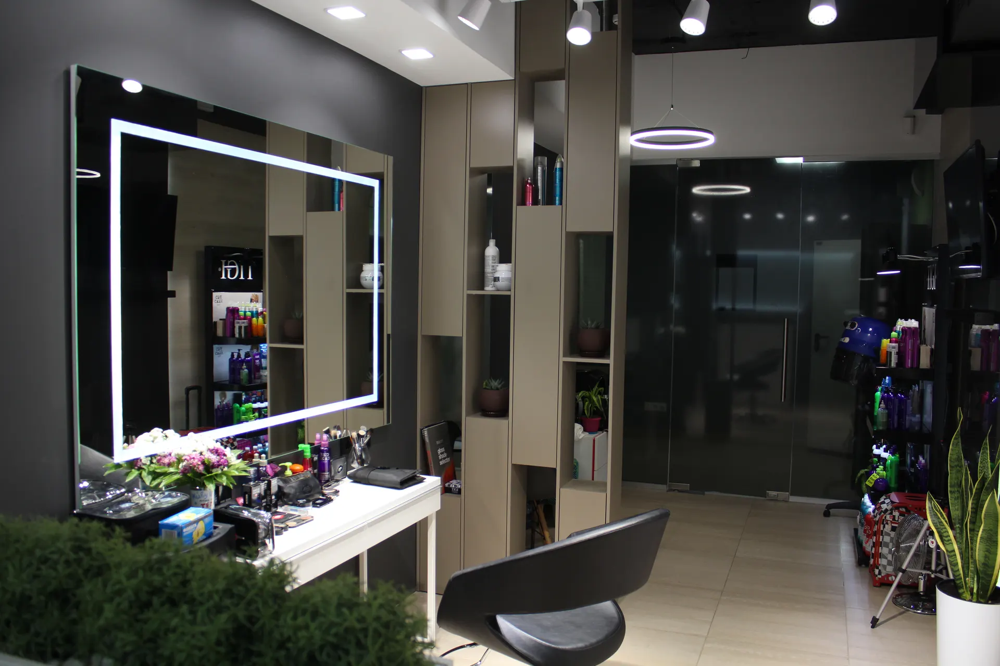
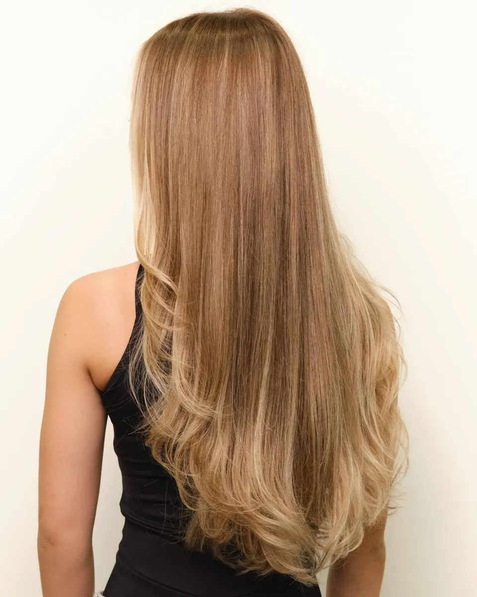
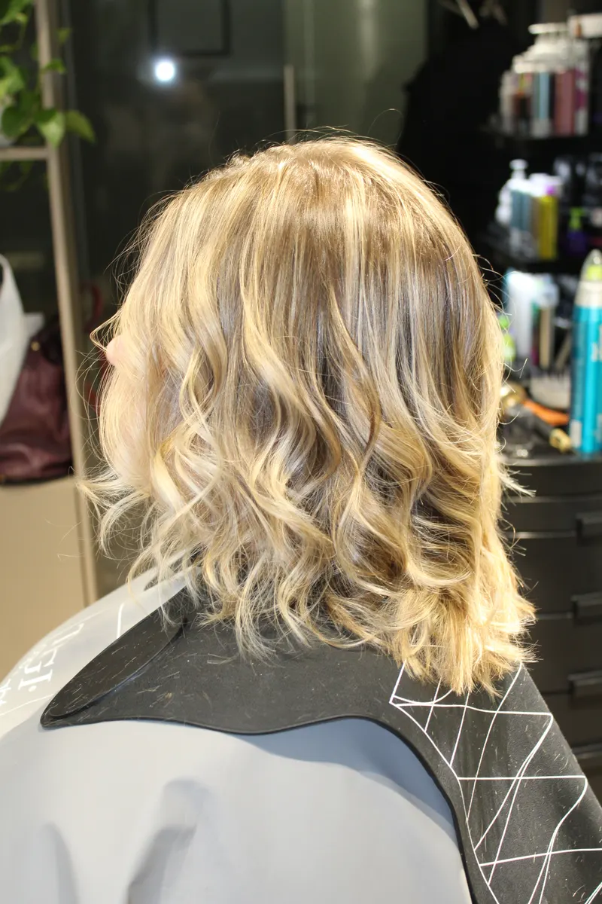
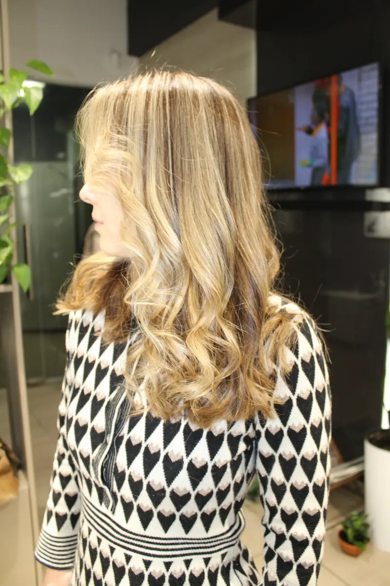

Стрижки · окрашивание · аэртач · Ижевск
Стрижки и окрашивание в Ижевске у мастера-стилиста
Стрижка, окрашивание, тонирование и аэртач с красителем TIGI и уходом Dr.Sorbie. ТЦ «Галерея Пушкин», Пушкинская, 268. Ежедневно с 10:00 до 22:00 по записи.
- Стрижка с мытьём, уходом и укладкой
- Краситель TIGI и уход Dr.Sorbie
- Ежедневно, 10:00–22:00, по записи

Что входит в цену
Входит
- Стрижка: мытьё головы, уход TIGI и Dr.Sorbie, стрижка, салонная укладка
- Аэртач: салонный уход входит в стоимость
- Окрашивание: краситель TIGI премиум-сегмента
Отдельно, если нужно
- Укладка отдельно: от 2000 ₽, итог зависит от длины, густоты и сложности
- Салонный уход Dr.Sorbie и кондиционер Silk отдельными услугами
Цены на стрижки, окрашивание и уход
Цены из карточки студии на Яндекс.Картах. Время процедуры указано там же.
Стрижки
- Стрижка волос1–1,5 часа: мытьё головы, уход TIGI и Dr.Sorbie, стрижка, салонная укладка бесплатно3 500 ₽
- Абонемент на 5 стрижекмытьё головы, средства Dr.Sorbie, стрижка, салонная укладка бесплатно10 000 ₽
- Укладка волосдля фотосессии, праздника или для себя, цена минимальная: зависит от длины, густоты и сложностиот 2 000 ₽
Окрашивание
- Окрашивание волос2 часа, краситель TIGI премиум-сегмента8 000 ₽
- Тонирование волос1 час, тон в тон или темнее, смягчает переходы7 000 ₽
- Аэртач (airtouch)4 часа, мягкая растушёвка в прикорневой зоне, салонный уход входит10 000 ₽
Уход
- Салонный уход Dr.Sorbieбелок, кератин, протеин: глубокое увлажнение2 500 ₽
- Кондиционер Silk Dr.Sorbieразглаживает и смягчает волосы5 000 ₽
Цены на карточке давно не обновлялись, итоговую стоимость подтверждает мастер.
Как проходит визит
- 01
Запись
Студия работает по предварительной записи: пишете в WhatsApp или Telegram, звоните или выбираете время на сайте.
- 02
Консультация
Мастер подробно консультирует и рекомендует уход, как пишут клиентки.
- 03
Стрижка или цвет
Стрижка за 1–1,5 часа, окрашивание около 2 часов, аэртач около 4 часов.
- 04
Укладка
К стрижке салонная укладка входит бесплатно.
- 05
Уход
Можно добавить салонный уход Dr.Sorbie или кондиционер Silk.



Что отмечают клиенты
Слышит клиента
Клиентки пишут, что стрижка получилась именно такой, как они хотели.
Подробно консультирует
Клиентка отмечает подробную консультацию по уходу за волосами.
Удобное расположение
В отзывах отмечают приятную атмосферу и удобное расположение в центре.
Отзывы с Яндекс.Карт
«Отличный компетентный мастер. Подробно проконсультировали по уходу волос. Стрижку сделали именно ту, которую просила, Приятная атмосфера, удобное расположение. Пришла раньше назначенного времени, мастер сразу же приняла.»
Виктория Подсердцева · 18 мая
«Недавно была на стрижке у Анны в салоне, все прошло прекрасно! Стрижка получилась именно такой какой я хотела. Анна - настоящий профессионал своего дела с золотыми руками, аккуратная и внимательная. Очень довольна работой и любуюсь своими волосами каждый день Обязательно прийду ещё»
Анна Кузнецова · 10 июня
«Доверила свои волосы Анне и очень рада! Анна подобрала стрижку подходящую именно для моих волос, учитывая все мои предпочтения. Также порекомендовала уход. Пока я купила только масло для волос, но уже волосы стали явно лучше. Я всем довольна!»
Малика Шакирова · 7 июля
Отзывы с карточки на Яндекс.Картах, без правок.
Частые вопросы
Где находится студия?
Ижевск, Пушкинская улица, 268, ТЦ «Галерея Пушкин», этаж -1.
Как работает студия?
Каждый день с 10:00 до 22:00, по предварительной записи.
Сколько стоит стрижка?
3500 ₽, в стоимость входят мытьё головы, уход и салонная укладка. Есть абонемент на 5 стрижек за 10 000 ₽.
Какое окрашивание делаете?
Окрашивание любой сложности красителем TIGI, тонирование и аэртач.
Сколько длится аэртач?
Около 4 часов, салонный уход входит в стоимость.
Напишите, когда вам удобно
- Адрес
- Пушкинская ул., 268, ТЦ «Галерея Пушкин», этаж -1, Ижевск
- Часы
- Ежедневно 10:00–22:00, по записи
- Телефон
- +7 (912) 005-56-16